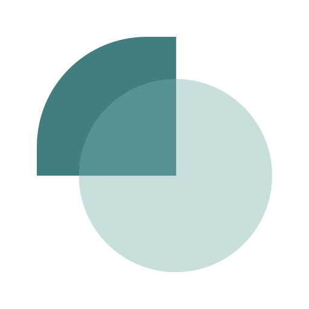

Unabhängige Beratung. Klare Erklärungen. Steuerersparnis & Vorsorge



Dein finanzielles Fundament, zur Absicherung deines Lebensstandards (Steueroptimierte Altersvorsorge & Einkommensabsicherung).
Mehr
Professionelles Management deines Depots, weil dein Depot mehr kann als den MSCI World.
Mehr
Effektive Konzepte für dein Immobilien-Investment, in Kooperation mit unserem Partner Relago begleiten wir dich von der Konzeption bis zum Notar und darüber hinaus.
Mehr
Der deutsche Finanz- und Steuerdschungel kann kompliziert sein, besonders wenn man aus einem anderen Land kommt. Wir helfen dir, deine Investments und Altersvorsorge so zu strukturieren, dass sie flexibel bleiben. Auch im Fall, dass sich deine Pläne ändern oder du ins Ausland ziehst.
Für Menschen wie dich ...
Unabhängig. Transparent. Echter Mehrwert.
Ich bin Kevin Hudel, Gründer von Finora. Seit über sechs Jahren bin ich in der Finanzdienstleistungsbranche tätig und habe mir in dieser Zeit Fachwissen in vielen Bereichen erarbeitet. Vom klassischen Bankwesen über Versicherungen bis hin zur Vermögens- und Investmentberatung.
Letztere wurde schnell zu meiner Leidenschaft und genau das trieb mich dazu an, mein eigenes, spezialisiertes Investment Studio zu gründen. Nach hunderten von Kundengesprächen kamen viele weitere gute Gründe hinzu …
Wir sind eine freie Investmentberatung – ohne Produktvorgaben, ohne Interessenkonflikte. Bei uns stehst du und deine Ziele im Mittelpunkt.
Klare Strukturen, faire Kosten, keine versteckten Klauseln. Du weißt jederzeit, woran du bist und kannst Entscheidungen mit gutem Gefühl treffen.
Wir konzentrieren uns bewusst nur auf drei Kernbereiche. Dafür aber mit echter Expertise damit du von Beratung profitierst, die messbar besser ist.
Während eines kurzen Kennenlernens prüfen wir, ob die persönliche Wellenlänge passt & wie wir dir weiterhelfen können.
Im 2. Schritt erarbeiten wir eine auf dich & deine Bedürfnisse zugeschnittene Strategie. Diese wird dir dann im Folgetermin präsentiert, also sei gespannt – hier wartet bereits jede Menge Mehrwert auf dich!
Bei Finora verstehen wir Geldanlage & Investment nicht als einmaliges Projekt, sondern als langfristigen Prozess. Genau darauf sind auch die Partnerschaften mit unseren Kunden ausgelegt.
Dich erwartet nachhaltige Betreuung, mit gezielten Anpassungen deines Portfolios & neuen Bausteinen, die zu deiner Lebenssituation und der Marktentwicklung passen!
Kostenloses Erstgepräch vereinbaren„Kevin war mir eine riesige Hilfe beim Umzug nach Deutschland. Er hat mir sehr geholfen, mich im Dschungel der Kranken- und Finanzpläne zurechtzufinden. Nach einem ersten Gespräch, in dem wir meine Bedürfnisse geklärt haben, hatten wir regelmäßige Online-Meetings. Dort präsentierte er mir ausführliche Informationen zu den jeweiligen Themen und erklärte mir alles detailliert. Kevin ist stets sehr professionell und freundlich. Ich kann seine Dienste wärmstens empfehlen. Vielen Dank, Kevin, für deine großartige Unterstützung!"
„Ich kann Kevin uneingeschränkt empfehlen. Seine Professionalität und seine sympathische Art machen ihn zu einem idealen Berater. Er hat die bemerkenswerte Fähigkeit, die Finanzwelt für jemanden wie mich, der neu auf diesem Gebiet ist und sich in einem fremden Land aufhält, viel verständlicher zu machen. Ich bin sehr froh, dass ich mich für die Zusammenarbeit mit ihm entschieden habe und freue mich darauf, die Ergebnisse unserer gemeinsamen Arbeit zu sehen."
„Kevin ist ein professioneller und geduldiger Berater, der offen mit Menschen
umgeht, ihren Zukunftsplänen aufmerksam zuhört und ihnen eine individuelle Beratung bietet, die auf ihre
Bedürfnisse zugeschnitten ist. Ich war ein absoluter Neuling im Bereich Investitionen und investierte
wahllos in Aktien, da ich nur über begrenztes Wissen aus diversen Tutorials verfügte. Er vereinbarte mehrere
Treffen, um mir verschiedene Anlagestrategien zu erläutern und mir zu erklären, was für meine zukünftigen
Bedürfnisse am sinnvollsten wäre. Er präsentierte mir eine umfassende, langfristige Strategie und erklärte
mir, wie ich meine Investitionen sinnvoller und wachstumsorientierter gestalten kann.
Ich kann ihn
uneingeschränkt empfehlen."
Hier finden Sie Antworten auf die Fragen, die mir am häufigsten gestellt werden – klar, ehrlich und ohne Fachchinesisch.
Lass uns ehrlich sein: Wenn du wolltest, könntest du dir selbst ein Depot eröffnen und irgendeinen MSCI World ETF kaufen.
Warum also überhaupt Beratung in Anspruch nehmen?
Weil der MSCI World eben nur Durchschnitt ist. Durchschnittliche Wertentwicklung, durchschnittliche Kosten, und damit: durchschnittlicher Mehrwert.
Bei Finora geht's genau um das Gegenteil.
Wir beschäftigen uns seit Jahren damit, das maximale Potenzial aus deiner Geldanlage herauszuholen. Unsere erprobten Strategien findest du in keinem YouTube-Video & genau diese machen den Unterschied: Sie heben dich vom Durchschnitt ab und bringen deinen Vermögensaufbau auf das nächste Level. Überzeug dich gern selbst im kostenfreien Beratungsgespräch!
Die Beratungsgespräche sind für dich kostenfrei & unverbindlich. Quasi unsere Zufriedenheitsgarantie für dich: wir verdienen nur Geld, wenn du den Mehrwert für dich erkennst und dich zu einer Zusammenarbeit mit uns entscheidest.
Als unabhängiges Beratungsunternehmen gibt es verschiedene Wege, auf denen wir mit unseren Kunden
zusammenarbeiten können.
Bspw. gibt es die Möglichkeit der Honorar- oder Provisionsbasis und
der Management Fee.
Alle Modelle haben ihre Vor- und Nachteile. Bei uns darfst du
selbst festlegen, welche Variante für dich passender ist. So oder so: die Kosten werden
im Beratungsgespräch transparent kommuniziert.
Ja! Unsere gesamte Beratungsleistung kannst du sowohl in Deutsch, als auch in Englisch in Anspruch nehmen.
Nein, das Beratungsgespräch ist kostenlos und unverbindlich. Du entscheidest in Ruhe, ob und wie es weitergeht.